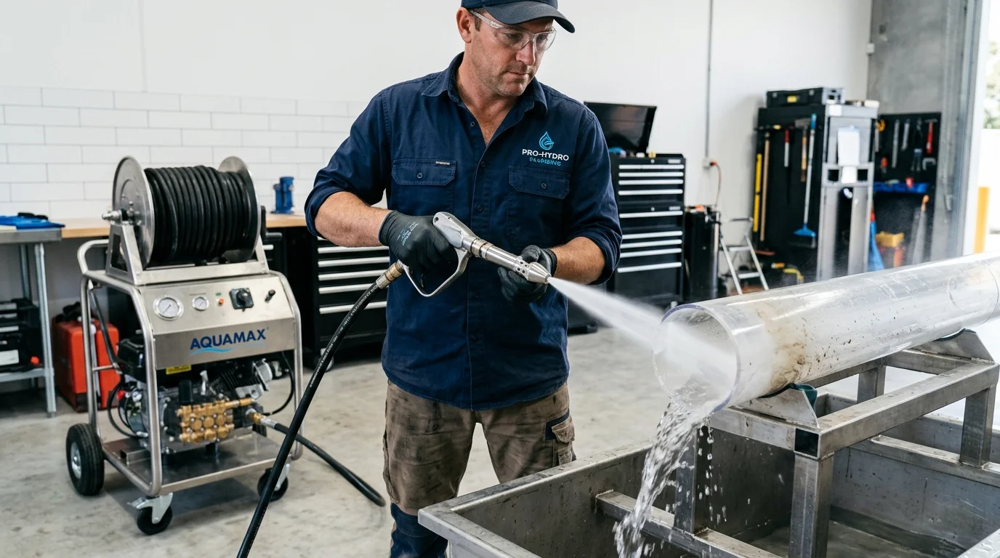

Commercial Drain Cleaning Naples, FL
Busy restaurant kitchens, multi-story condominium associations, and corporate retail plazas in Naples require dependable drainage infrastructure that prevents disruptive plumbing shutdowns. From grease trap line hydro jetting along 5th Avenue South dining corridors to vertical stack cabling in Pelican Bay beachfront high-rises, our commercial drain specialists deliver heavy-duty clearing engineered for commercial pipe volumes. We diagnose lines with video cameras first, coordinate around your off-peak operating hours, and confirm firm flat quotes before work starts. To protect your commercial facility, explore our central drain cleaning in Naples, FL services.
Off-peak schedulingFOG regulation
complianceHeavy-duty trailer jetting
High-Volume Drain Solutions for Naples Businesses
Commercial drainage systems handle significantly higher organic waste, fats, oils, and sanitizing chemicals than residential plumbing lines, leading to rapid pipe buildup.
When floor sinks overflow in a busy kitchen or commercial restrooms back up during peak weekend lunch hours, the resulting downtime impacts revenue, customer goodwill, and health code ratings. Basic residential mechanical snakes only punch small holes through heavy grease dams, which quickly seal shut again within days.
Our commercial drain cleaning crews utilize specialized hydro jetting machines delivering up to 4,000 PSI of water pressure. Our rotating jetting nozzles scour interior pipe circumference 360 degrees, flushing grease, coffee grounds, and food starch out to municipal interceptor mains while preserving existing pipe integrity.

FOG Protection: We clear grease line blockages between
commercial kitchen fixtures and outdoor grease interceptors cleanly.
Specialized Facilities We Support
Targeted drainage management across Southwest Florida commercial property sectors.
Restaurants & Commercial Kitchens
Jetting dish machine discharge lines, three-bay sink drains, floor sinks, and bar drains to prevent foul odors and health inspection violations.
Condominium & Apartment HOAs
Cabling and jetting vertical multi-story drainage stacks and shared roof vents across coastal tower properties in Pelican Bay and Park Shore.
Retail Plazas & Shopping Centers
Clearing high-traffic public restroom main sewer lines, exterior parking lot cleanouts, and tenant junction points near The Mercato and US-41.
Medical & Professional Offices
Maintenance and rapid stoppage clearing for staff breakrooms, utility mop sinks, and patient restroom drainage fixtures.
How We Execute Commercial Visits
Professional protocols tailored to commercial facility managers and business owners.
Facility Assessment & Access Check
We review your building layout, inspect cleanouts, interceptors, and floor sinks, and establish optimal staging locations that protect customer zones.
Off-Peak Scheduling Coordination
We coordinate dispatch times during scheduled pre-opening kitchen hours or post-closing shifts to eliminate conflict with your daily patrons.
Video Camera Inspection
When necessary, we scope the line before jetting to locate grease dams, collapsed sections, or scale build-up, confirming a flat-rate written quote.
High-Volume Pressure Jetting
Our technicians feed commercial jetter hoses with specialized grease-cutting nozzles, stripping interior pipe walls down to bare conduit.
Sanitary Cleanup & Manager Sign-Off
We sanitize the work area, run comprehensive flow volume tests across kitchen fixtures, and deliver service documentation for your facility log.
What Clogs Naples Commercial Drain Systems?
Understanding the severe buildup that threatens commercial drainage lines.
Solidified Grease & Animal Fats
Warm fryer oils and fats wash down kitchen sinks, emulsify briefly with detergent, then cool and solidify into rock-hard layers inside horizontal underground pipes.
Starch & Food Sediment Slurry
Rice, pasta starches, coffee grounds, and vegetable fibers bind with residual grease to create dense slurry plugs that standard auger cables cannot pull back.
Condo Shared Stack Deterioration
Vertical multi-unit cast iron drainage stacks suffer heavy scale buildup, reducing pipe diameter and causing sudden backups in lower-floor residential units.
Flushed Non-Dispersible Solids
Commercial customer restrooms frequently encounter flushed paper towels, wet wipes, and foreign debris that lodge at line transitions and trap waste.
Commercial Drain Cleaning Pricing Guidelines
Clear, job-based quotation structures for commercial facilities and HOAs.
Commercial Fixture Cabling
Localized stoppages on floor drains, mop basins, or bar sinks are quoted upfront based on line accessibility and cable machinery required.
Grease Line Hydro Jetting
High-pressure grease line scouring typically ranges based on total footage and diameter, with commercial jetting typically reaching up to approx. $651.
Condominium Stack Maintenance
Multi-story vertical stack clearing is quoted as a comprehensive building scope tailored to HOA association board requirements.
Mandatory Pricing Disclaimer: Estimates reflect typical Naples, FL market ranges for standard residential access. Final price confirmed on-site before work begins. We do not charge hidden trip fees. For our full transparent price breakdown across Southwest Florida, visit our dedicated Naples drain cleaning cost guide.

Can commercial drain cleaning be scheduled outside restaurant operating hours in Naples?
Yes. We coordinate with restaurant general managers and facility directors to schedule preventative hydro jetting and line cabling during early morning prep hours or late evening closures so your dining room and kitchen operations remain uninterrupted.
How does hydro jetting help Naples restaurants meet Collier County FOG regulations?
Collier County enforces strict Fats, Oils, and Grease (FOG) standards to protect municipal sewer mains. While grease trap pumpers empty the tank, grease still coats connecting branch pipes. Our high-pressure jetting scours pipe walls back to bare conduit, preventing backups and county violation citations.
Do you service high-rise condominium vertical stacks in Naples?
Yes. We work closely with condominium HOA boards and property managers along Pelican Bay and Gulf Shore Boulevard to clean shared vertical drainage stacks, resolving cross-unit kitchen stoppages and laundry sudsing backups.
How are commercial drain cleaning jobs priced in Naples, FL?
Commercial drain cleaning is quoted on a per-job basis because line length, grease accumulation, pipe diameter, access points, and off-hour scheduling vary significantly. We inspect the line, verify access, and confirm a firm quote before work begins.

Protect Your Business From Drainage Downtime
Tell us your commercial street or plaza location in Naples. We will coordinate a tailored inspection and quote your service upfront.
Contact Naples Drain Pros Dispatch
Speak with our team regarding commercial grease maintenance, HOA stack service, and emergency clearing.